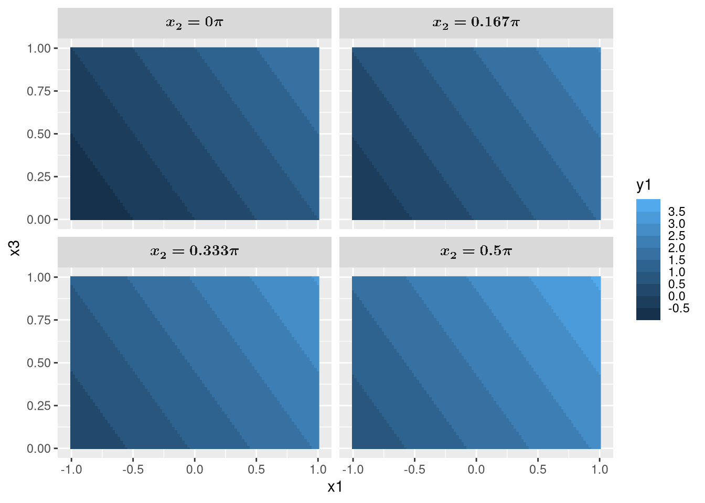

| Language | Package | Median (seconds) | Standard deviation |
|---|---|---|---|
| Julia | DataFrames.jl (subsequent runs) | 0.0576 | 0.01480 |
| Julia | DataFrames.jl (1st run) | 0.2950 | 0.00756 |
| Python | Naive | 0.8925 | 0.01650 |
| Python | polars | 1.2000 | 0.04570 |
| R | data.table | 2.8100 | 0.05360 |
| R | tidytable | 11.8550 | 0.05340 |
| Python | pandas | 13.1900 | 0.24600 |
| R | dplyr & tidyr | 24.0800 | 0.31600 |
| Sample size = 10 each. | |||
| Julia precompiles functions, making them faster for subsequent runs. (1st run) refers to runs without precompilation. | |||
| Note that there are polars packages for R, Julia, and Rust, but Python was used for this benchmark. | |||
R is still where the heart is
software
programming
I first became interested in R after discovering R Markdown many years ago, but have only really used it properly in a graduate course dealing with bioinformatics.
Yet, despite spending orders of magnitude more time in Julia and Python for my work, I keep getting drawn back to R.
I just can’t get over the neat tidyverse way of data wrangling and the beautiful grammar of graphics style of ggplot2.
Yes, there are packages in Julia and Python that replicates them, e.g., seaborn, plotnine, AlgebraOfGraphics.jl, Tidier.jl, etc. But these are just further testaments to the awesomeness of R that other workflows in other languages are trying to replicate.
Some examples
I should mention again, just like I did in the post on Haskell, that I am neither a software developer nor am I computer science trained, and so some technical aspects of the language might escape me.
Additionally, I am not really an expert in all of the packages mentioned, and so there might be better solutions that I missed.
Having said that, let’s look at some examples for why I think R is awesome.
Clean syntax
In scientific computing, one typically has some function, say hugeQuantumSys(x1, x2, x3, x4, ...), that takes in a bunch of parameters and return a whole other bunch of output values.1. Each of the input parameters has some range that we want to loop over to scan the entire parameter regime of the simulated physical system.
1 Typically these input and output parameters correspond to some physical parameters of the system you are simulating, e.g., the initial state of the qubits, temperature of the interacting environment, entropy or energy of the qubits, etc.
After this huge and expensive computation, which ideally is parallelized over all input parameters, we most likely want to save all the input parameters with their corresponding output values in a file, say a parquet file.
What’s the best way to do this?
It’s obvious that we can use a dataframe, e.g., pandas, polars, DataFrames.jl etc., so that we can store all the input parameters and output values into a columnar format to be saved as a parquet file.
library(dplyr)
library(tidyr)
library(purrr)
hugeQuantumSys <- function(x1, x2, x3) {
## Some huge calculations
return(c(y1 = x1 + x2 + x3, y2 = x1 * x2 * x3, y3 = x1 - x2 - x3))
}
df <- expand_grid(
x1 = seq(-1, 1, length = 100),
x2 = seq(0, pi / 2, length = 100),
x3 = seq(0, 1, length = 100)
) |>
mutate(results = pmap(list(x1, x2, x3), hugeQuantumSys)) |>
unnest_wider(results)
arrow::write_parquet(df, "file.parquet")using DataFrames
using Arrow
function hugeQuantumSys(x1, x2, x3)
# Some huge calculations
return (y1 = x1 + x2 + x3, y2 = x1 * x2 * x3, y3 = x1 - x2 - x3)
end
df = DataFrame(
Iterators.product(
range(-1, 1, length = 100),
range(0, pi / 2, length = 100),
range(0, 1, length = 100)
)
)
rename!(df, [:x1, :x2, :x3])
y_vals = DataFrame(map(hugeQuantumSys, df.x1, df.x2, df.x3))
df = hcat(df, y_vals)
Arrow.write("file.parquet", df)import numpy as np
import pandas as pd
import itertools
def hugeQuantumSys(x1, x2, x3):
# Some huge calculations
return {"y1": x1 + x2 + x3, "y2": x1 * x2 * x3, "y3": x1 - x2 - x3}
df = pd.DataFrame(
itertools.product(
np.linspace(-1, 1, 100),
np.linspace(0, np.pi / 2, 100),
np.linspace(0, 1, 100)
),
columns=["x1", "x2", "x3"],
)
y_vals = df.apply(
lambda row: hugeQuantumSys(row["x1"], row["x2"], row["x3"]),
axis=1,
result_type="expand",
)
df = pd.concat([df, y_vals], axis=1)
df.to_parquet("file.parquet")import numpy as np
import polars as pl
import itertools
def hugeQuantumSys(x1, x2, x3):
# Some huge calculations
return {"y1": x1 + x2 + x3, "y2": x1 * x2 * x3, "y3": x1 - x2 - x3}
df = pl.DataFrame(
itertools.product(
np.linspace(-1, 1, 100),
np.linspace(0, np.pi / 2, 100),
np.linspace(0, 1, 100)
),
schema=["x1", "x2", "x3"],
)
y_vals = df.map_rows(lambda row: hugeQuantumSys(row[0], row[1], row[2])).unnest()
df = pl.concat([df, y_vals], how="horizontal")
df.write_parquet("file.parquet")import numpy as np
import pandas as pd
import itertools
def hugeQuantumSys(x1, x2, x3):
# Some huge calculations
return x1 + x2 + x3, x1 * x2 * x3, x1 - x2 - x3
x1 = np.linspace(-1, 1, 100)
x2 = np.linspace(0, np.pi / 2, 100)
x3 = np.linspace(0, 1, 100)
N = len(x1) * len(x2) * len(x3)
x1_vals = np.zeros(N)
x2_vals = np.zeros(N)
x3_vals = np.zeros(N)
y1_vals = np.zeros(N)
y2_vals = np.zeros(N)
y3_vals = np.zeros(N)
for i, (x1_val, x2_val, x3_val) in enumerate(itertools.product(x1, x2, x3)):
x1_vals[i] = x1_val
x2_vals[i] = x2_val
x3_vals[i] = x3_val
y1_vals[i], y2_vals[i], y3_vals[i] = hugeQuantumSys(x1_val, x2_val, x3_val)
df = pd.DataFrame(
{
"x1": x1_vals,
"x2": x2_vals,
"x3": x3_vals,
"y1": y1_vals,
"y2": y2_vals,
"y3": y3_vals,
}
)
df.to_parquet("file.parquet")I’ve also included a “naive” way of doing this for Python, which should make it clear what we are trying to achieve.
Note that we have purposely let the function hugeQuantumSys return a named vector for tidyverse, named tuple for DataFrames.jl, and dictionaries for pandas and polars, so that they can be easily unnested/expanded with column names.
Also note that the return values for y1, y2, and y3 are just examples.
Note that all the codes (except the naive approach) are essentially doing the same thing:
- Create a dataframe with 3 columns with values that are Cartesian products2 of
x1,x2, andx3. - Create 3 new columns,
y1,y2, andy3, which are the outputs of the functionhugeQuantumSys(this can be done using higher-order functions such as map or apply, or list comprehension for Python and Julia).
2 E.g., if x1 = [0, 1] and x2 = ["A", "B"], their Cartesian products are (x1, x2) = [(0, "A"), (0, "B"), (1, "A"), (1, "B")]. Basically all possible combinations.
3 This dataframe is not “tidy” per se (Wickham 2014), but it’s good enough for now.
Each row of the dataframe will thus be one observation, i.e., the ith row contains x_{1,i}, x_{2,i}, x_{3,i}, y_{1,i}, y_{2,i}, y_{3,i}, where y_{1,i}, y_{2,i}, y_{3,i} = \mathrm{hugeQuantumSys}(x_{1,i}, x_{2,i}, x_{3,i})3.
Now, I’m sure that most can agree that the syntax of tidyverse is much better than the others.
There’s a couple of reasons:
expand_gridcreates the dataframe and the Cartesian product in one go.- We can write
x1 = ...directly to specify the column names. - We do not need to create a new dataframe
y_valsand then concatenating it to the original dataframedf. - We can use the column names
x1,x2, andx3directly without quotes, and without explicitly stating that we are referring to the rows.
I think the magic happens at points 2, 3, 4, which are possible thanks to R’s non-standard evaluation. Furthermore, pipes4 makes the syntax cleaner where most workflows are just a long chaining of readable functions.
4 The symbol |> is the pipe operator, which can increase the readability of your code. The following are equivalent: h(g(f(x, y), z)) and x |> f(y) |> g(z) |> h(). Using pipes give us the clean syntax instead of writing unnest_wider(mutate(expand_grid(...), ...), ...)
Clean SQL-like operations
Supposed we want to:
- look only at the case of
y3 < 0, - group into cases where
y1 * y2 >= 0andy1 * y2 < 0, - find the mean values of
y1,y2, andy3in each of these groups.
df |>
filter(y3 < 0) |>
mutate(is_positive = (y1 * y2 >= 0)) |>
group_by(is_positive) |>
summarize(y1_mean = mean(y1),
y2_mean = mean(y2),
y3_mean = mean(y3))SELECT
(y1 * y2) >= 0 AS is_positive,
AVG(y1) AS y1_mean,
AVG(y2) AS y2_mean,
AVG(y3) AS y3_mean
FROM df
WHERE y3 < 0
GROUP BY (y1 * y2) >= 0;using Statistics
df |>
x -> filter(row -> row.y3 < 0, x) |>
x -> transform(x, [:y1, :y2] => ((y1, y2) -> y1 .* y2 .>= 0) => :is_positive) |>
x -> combine(
groupby(x, :is_positive),
:y1 => mean => :y1_mean,
:y2 => mean => :y2_mean,
:y3 => mean => :y3_mean
)
# alternatively, without using pipes
df_filtered = filter(row -> row.y3 < 0, df)
df_mutated = transform(df_filtered, [:y1, :y2] => ((y1, y2) -> y1 .* y2 .>= 0) => :is_positive)
combine(
groupby(df_mutated, :is_positive),
:y1 => mean => :y1_mean,
:y2 => mean => :y2_mean,
:y3 => mean => :y3_mean
)@chain df begin
@subset(:y3 .< 0)
@transform(:is_positive = (:y1 .* :y2 .>= 0))
@groupby(:is_positive)
@combine(:y1_mean = mean(:y1),
:y2_mean = mean(:y2),
:y3_mean = mean(:y3))
end(
df.query("y3 < 0")
.assign(is_positive=lambda x: (x["y1"] * x["y2"]) >= 0)
.groupby("is_positive")
.agg(
y1_mean=("y1", "mean"),
y2_mean=("y2", "mean"),
y3_mean=("y3", "mean")
)
.reset_index()
)(
df.filter(pl.col("y3") < 0)
.with_columns(is_positive=(pl.col("y1") * pl.col("y2")) >= 0)
.group_by("is_positive")
.agg(
y1_mean=pl.col("y1").mean(),
y2_mean=pl.col("y2").mean(),
y3_mean=pl.col("y3").mean(),
)
)# A tibble: 2 × 4
is_positive y1_mean y2_mean y3_mean
<lgl> <dbl> <dbl> <dbl>
1 FALSE 0.915 -0.221 -1.87
2 TRUE 1.61 0.187 -0.950I think R’s non-standard evaluation and pipes really shines here. First, Python’s lack of non-standard evaluation means that we have to specify anonymous functions, pl.col, or quotes when accessing the rows and columns5. Second, Julia’s not so well-designed pipes means that we have to write anonymous functions for each pipe (i.e., the annoying x -> ... notation). Though thankfully, DataFramesMeta.jl uses macros to achieve a syntax closer to tidyverse6.
5 Still, Python’s dot notation really saves the day here to make it readable, though we have to surround them with parenthesis.
6 Additionally, the existence of symbols in Julia, due to partly being inspired by Lisp, allows us to write : instead of quotes to refer to columns, which is a little better I guess?
The DataFrames.jl docs has a good comparison here.
Grammar of graphics
Next, supposed we want to plot a heat map y1 against x1 and x3 for each x2 = 0, x2 = pi/6, x2 = pi/3, and x2 = pi/2, i.e., we have four subplots for the four different values of x2.
library(ggplot2)
library(ggtypst)
df |>
filter(x2 == 0 | near(x2, pi / 6) | near(x2, pi / 3) | near(x2, pi / 2)) |>
mutate(x2 = paste("x_2 =", signif(x2 / pi, 3), "pi")) |>
ggplot(aes(x1, x3, fill = y1)) +
geom_raster() +
scale_fill_steps(n.breaks = 10) +
facet_wrap(~x2) +
theme(strip.text = element_math_typst(size = 12, face = "bold"))import matplotlib.pyplot as plt
filtered_df = df[
(df["x2"] == 0)
| (np.isclose(df["x2"], np.pi / 6))
| (np.isclose(df["x2"], np.pi / 3))
| (np.isclose(df["x2"], np.pi / 2))
].copy()
filtered_df["x2"] = filtered_df["x2"].apply(lambda x: f"x2 = {x / np.pi:.3f} pi")
x2_groups = filtered_df.groupby("x2", sort=False)
fig, axes = plt.subplots(2, 2)
for ax, (x2_label, group) in zip(axes.flatten(), x2_groups):
x1_unique = np.sort(group["x1"].unique())
x3_unique = np.sort(group["x3"].unique())
X1, X3 = np.meshgrid(x1_unique, x3_unique)
Z = group.pivot_table(index="x3", columns="x1", values="y1").values
contourf = ax.contourf(X1, X3, Z)
plt.colorbar(contourf, ax=ax)
ax.set_xlabel("x1")
ax.set_ylabel("x3")
ax.set_title(x2_label)
plt.tight_layout()
plt.show()using CairoMakie
using Printf
filtered_df = df[
(df.x2 .== 0) .|
(isapprox.(df.x2, π / 6)) .|
(isapprox.(df.x2, π / 3)) .|
(isapprox.(df.x2, π / 2)),
:,
]
filtered_df.x2_label = [@sprintf("x2 = %.3f pi", x / π) for x in filtered_df.x2]
x2_groups = groupby(filtered_df, :x2_label)
fig = Figure()
for (idx, group) in enumerate(x2_groups)
row = div(idx - 1, 2) + 1
col = mod(idx - 1, 2) + 1
ax = Axis(fig[row, col], xlabel = "x1", ylabel = "x3", title = group.x2_label[1])
x1_unique = sort(unique(group.x1))
x3_unique = sort(unique(group.x3))
X1 = repeat(x1_unique', length(x3_unique), 1)
X3 = repeat(x3_unique, 1, length(x1_unique))
Z = fill(NaN, length(x3_unique), length(x1_unique))
for (i, x3_val) in enumerate(x3_unique), (j, x1_val) in enumerate(x1_unique)
row_match = findfirst((group.x1 .≈ x1_val) .& (group.x3 .≈ x3_val))
if !isnothing(row_match)
Z[i, j] = group.y1[row_match]
end
end
contourf!(ax, X1, X3, Z, levels = 15)
end
fig
I don’t think anything else can beat this7. The grammar of graphics style of plotting works nicely on tidy data. We just have to specify the aesthetics for what to plot, geoms for how to plot, and facets for the what to subplot.
7 Not counting plotting libraries that aims to replicate ggplot2 of course. Though, even then it is difficult to come close.
Also, non-standard evaluation shines again as we see that it knows to label the x and y labels as x1 and x3 based on the column names. We also easily mutated x2 to include x_2 = and pi without anonymous functions, and showcased ggtypst which converted them to math using Typst.
I also have to confess that the Matplotlib and Makie.jl codes are generated by Claude Haiku 4.5. I’ve mentioned how much of a chore plotting is. Ain’t nobody has time for that.
Tidyverse with different backends
Unfortunately, the tidyverse (using dplyr/tidyr) and pandas codes are actually quite slow, particularly, we are acting on 100 \times 100 \times 100 = 1000000 rows, i.e., the number of Cartesian products for x1, x2, and x3.
This is one of the reason why polars and DuckDB are now getting more popular over pandas for data science in Python due to their speed.
But it’s quite a chore to convert your pandas code to polars for example: you’ll have to change columns to schema, apply to map_rows, result_type='expand' to .unnest(), axis=1 to how='horizontal', query to filter, assign to with_columns etc.
What about R? There’s a polars package for R, how hard is it to switch?
Because the tidyverse workflow and syntax is such a joy to use, how about we keep using the tidyverse code, but just let it run polars in the background? That’s exactly what tidypolars does!
And it’s not the only one. There’s duckplyr for DuckDB, dbplyr for SQL, arrow for Apache Arrow, sparklyr for Apache Spark, and dtplyr or tidytable for data.table.
Let’s give tidytable a try.
library(dplyr)
library(tidyr)
library(purrr)
hugeQuantumSys <- function(x1, x2, x3) {
## Some huge calculations
return(c(y1 = x1 + x2 + x3, y2 = x1 * x2 * x3, y3 = x1 - x2 - x3))
}
df <- expand_grid(
x1 = seq(-1, 1, length = 100),
x2 = seq(0, pi / 2, length = 100),
x3 = seq(0, 1, length = 100)
) |>
mutate(results = pmap(list(x1, x2, x3), hugeQuantumSys)) |>
unnest_wider(results)library(tidytable)
hugeQuantumSys <- function(x1, x2, x3) {
## Some huge calculations
return(c(y1 = x1 + x2 + x3, y2 = x1 * x2 * x3, y3 = x1 - x2 - x3))
}
df <- expand_grid(
x1 = seq(-1, 1, length = 100),
x2 = seq(0, pi / 2, length = 100),
x3 = seq(0, 1, length = 100)
) |>
mutate(results = pmap(list(x1, x2, x3), hugeQuantumSys)) |>
unnest_wider(results)See any differences between the two codes? There isn’t any as tidytable is a drop-in replacement for tidyverse’s dplyr, tidyr, and purrr, but now uses data.table as the backend (instead of tidyverse’s tibble or R’s default data.frame.
But what if hugeQuantumSys is the one taking a long time to run? How do I parallelize its run on the 1000000 rows? Simple, use furrr instead of purrr, and replace pmap with future_pmap. You see, the tidyverse has become such a staple in R that a lot of packages are designed around it, which makes integration with it so simple8.
8 This reminds me of Julia’s SciML, where different packages all works together thanks to Julia’s multiple dispatch. Since we are talking about parallelization, another shout out to Julia is the ability to allow one to multithread their for loops just by adding the Threads.@threads macros in front of it, e.g., Threads.@threads for x in 0:1000 ....
Here’s a little benchmark for the above codes. For more accurate benchmarks, refer to this.
It’s important to note that this is not an apples to apples comparison.
The bottleneck for dplyr/tidyr, pandas, tidytable, and polars is the unnesting operation, but there is no unnesting operation for DataFrames.jl9, data.table, and the naive Python solution.
9 DataFrames.jl seems to do this automatically for the named tuple?
Still, it’s no surprise that Julia wins by a huge margin. It’s one of the reasons why I have entirely moved from Python to Julia.
However, my take is that we have to make the choice between coding time and computing time. Using the unnesting operation is quite convenient, but sacrifices speed. For example, I’m sure that polars can be made much faster if the code were more idiomatic to polars.
Do I want to sacrifice the readable and simple tidyverse codes for faster runtime, either by using a different package, writing in the naive way, or using Julia10?
10 Perhaps one day Tidier.jl will reach the same level as the tidyverse and all will be good.
For my purposes, probably not. My bottlenecks tend to be the computation itself (i.e., hugeQuantumSys) rather than the one time data wrangling anyway. For now, a little improvements using drop-in replacements for tidyverse is good enough.
Interops with Python and C++
But R don’t have the myriads of packages and libraries you have in Python you say?
I hear you. In fact, I’m a little annoyed that I can’t find a QuTiP, QuantumToolbox.jl, or QuantumOptics.jl equivalent in R11.
11 There’s so many quantum computing packages though, which are just glorified DSL for matrix multiplications.
But no worries, we can simply do this:
reticulate::use_virtualenv("~/.local/venv/")
qt <- reticulate::import("qutip")
J <- 1
t <- 1
Hint <- J *
qt$tensor(qt$destroy(2L), qt$create(2L)) +
qt$tensor(qt$create(2L), qt$destroy(2L))
U <- (-1i * Hint * t)$expm()
rhoIn <- qt$rand_dm(c(2L, 2L))
rhoOut <- U * rhoIn * U$dag()
print(rhoOut)Quantum object: dims=[[2, 2], [2, 2]], shape=(4, 4), type='oper', dtype=Dense, isherm=True
Qobj data =
[[ 0.06206267+0.j -0.10129994-0.02915226j 0.0376054 -0.00191309j
-0.04680058+0.00528503j]
[-0.10129994+0.02915226j 0.35161895+0.j 0.00491395+0.06849951j
0.07686642-0.08747121j]
[ 0.0376054 +0.00191309j 0.00491395-0.06849951j 0.32264321+0.j
-0.20371622+0.03871281j]
[-0.04680058-0.00528503j 0.07686642+0.08747121j -0.20371622-0.03871281j
0.26367517+0.j ]]
signature: (other: 'Qobj') -> 'Qobj'
In case you are wondering what we are doing here. H_\text{int} = J(\sigma_- \sigma_+ + \sigma_+ \sigma_-), U = e^{-iH_\text{int} t}, \rho_\text{out} = U \rho_\text{in} U^\dagger, where \rho_\text{in} is a randomly generated density matrix.
And just like that, we are using QuTiP in R.
Thanks to the reticulate package, I activated my Python virtual environment, and imported QuTiP to qt, which allows us to use it like in Python, just with some small syntax changes.
We can continue to use Python packages but with the goodies of tidyverse and ggplot2!
And if R and Python are not fast enough for your computationally expensive codes, Rcpp allows the calling of C++ code easily.
For example, I can use RcppEigen (or RcppArmadillo) with Quantum++ to write a compression.cpp file which exports the C++ function compressionGate that I can call in main.R.
library(RcppEigen)
reticulate::use_virtualenv("~/.local/venv/")
qt <- reticulate::import("qutip")
Sys.setenv(PKG_CXXFLAGS = "-I/usr/local/include/qpp")
sourceCpp("compression.cpp")
rhoIn <- qt$rand_dm(c(2L, 2L, 2L))$full()
rhoOut <- compressionGate(rhoIn)#include <RcppEigen.h>
// [[Rcpp::depends(RcppEigen)]]
#include <cmath>
#include <qpp/qpp.hpp>
using namespace qpp;
// [[Rcpp:export]]
cmat compressionGate(cmat rhoIn) {
cmat compress1 = kron(st.pz0, gt.Id2, gt.Id2) + kron(st.pz1, gt.X, gt.Id2);
compress1 *= kron(st.pz0, gt.Id2, gt.Id2) + kron(st.pz1, gt.Id2, gt.X);
cmat compress2 = kron(gt.Id2, st.pz0, st.pz0) + kron(gt.Id2, st.pz0, st.pz1) +
kron(gt.Id2, st.pz1, st.pz0) + kron(gt.X, st.pz1, st.pz1);
cmat compress = compress1 * compress2 * compress1;
return compress * rhoIn * adjoint(compress);
}Of course, this is just a toy example, and in actual use cases you will be writing the computationally expensive parts in C++ instead of simple matrix multiplications.
Here, I generated a random 3 qubits state with Python’s QuTiP and apply the C++-written compressionGate on it.
Note that it’s also possible to interoperate with other languages, but as far as I’m aware, reticulate and Rcpp are the most established.
But LLM?
There are some growing sentiments that it no longer matters what language or package one uses, as one can simply ask an LLM to write the code for you.
Here, I’ll state two claims that I believe applies to the current state of LLM at the time of writing (June 2026), that leads to corollaries on why I think the language still matters.
Current LLMs are not perfect, and can still generate bug-ridden codes.
Different from software development, in scientific computing and data analysis, bugs can be invisible by simply manifesting as plots or values that are incorrect.
The corollary to these is that
- One has to check and audit the LLM-generated code for any serious work.
I mean, would you submit results generated by LLM-written codes for publication without checking it? Or would you advise your company or clients using the same results without ensuring that the LLM-written codes are correct?
Considering these, my opinion is that
- The tidyverse syntax and way of doing things is easier and faster to check and audit.
On top of its simplicity, the tidyverse has a somewhat declarative syntax especially when used with higher-order functions (purrr) which makes it even easier to check for correctness12.
12 I’ve talked about the same thing in a Haskell post regarding how it is easier to check for correctness in a declarative approach rather than an imperative one.
I’ll go even further to say that the declarative approach means that using the tidyverse actually saves you more time than using an LLM, especially considering that LLMs like to generate overly complex codes rather than keeping it simple.
Imagine telling an LLM that13:
13 We use pandas as an example here, but the point probably still stands for non-tidyverse style codes.
“write me a pandas code for a dataframe df that keeps only y1 less than 2, create a new column where z is the sum of y1, y2, y3, then plot z against x1 where there is two lines, one for z >= 0 and one for z < 0”
wait for it to generate, copy and paste it, run it and hope that it didn’t hallucinate some functions, and then check that it is actually doing what you want, when you could have type less characters if you do it yourself.
df |>
filter(y1 < 2) |>
mutate(z = y1 + y2 + y3) |>
ggplot(aes(x1, z, color = factor(z >= 0))) +
geom_line()import pandas as pd
import matplotlib.pyplot as plt
# example: assume df already exists
# Step 1: keep only rows where y1 < 2
df = df[df['y1'] < 2].copy()
# Step 2: create new column z = y1 + y2 + y3
df['z'] = df['y1'] + df['y2'] + df['y3']
# Step 3: split into two series for plotting
df_pos = df[df['z'] >= 0]
df_neg = df[df['z'] < 0]
# Step 4: plot z vs x1 with two lines
plt.figure(figsize=(8,5))
plt.plot(df_pos['x1'], df_pos['z'], label='z >= 0', color='tab:blue', marker='o', linestyle='-')
plt.plot(df_neg['x1'], df_neg['z'], label='z < 0', color='tab:red', marker='o', linestyle='-')
plt.xlabel('x1')
plt.ylabel('z')
plt.title('z vs x1 (separate lines for z >= 0 and z < 0)')
plt.legend()
plt.grid(True)
plt.tight_layout()
plt.show()library(tidyverse)
# assume df exists with columns x1, y1, y2, y3
df_clean <- df %>%
filter(y1 < 2) %>% # keep only y1 < 2
mutate(z = y1 + y2 + y3, # new z column
z_sign = if_else(z >= 0, "z >= 0", "z < 0")) # grouping column for lines
# Plot: two lines (one for z >= 0, one for z < 0)
ggplot(df_clean, aes(x = x1, y = z, color = z_sign)) +
geom_line() +
geom_point() + # optional: points
scale_color_manual(values = c("z >= 0" = "steelblue", "z < 0" = "firebrick")) +
labs(x = "x1", y = "z (y1+y2+y3)", color = "Group") +
theme_minimal()import pandas as pd
import matplotlib.pyplot as plt
# Filter dataframe to keep only rows where y1 < 2
df = df[df['y1'] < 2]
# Create new column z as the sum of y1, y2, y3
df['z'] = df['y1'] + df['y2'] + df['y3']
# Create the plot
plt.figure(figsize=(10, 6))
# Plot line for z >= 0
df_positive = df[df['z'] >= 0]
plt.plot(df_positive['x1'], df_positive['z'], label='z >= 0', marker='o')
# Plot line for z < 0
df_negative = df[df['z'] < 0]
plt.plot(df_negative['x1'], df_negative['z'], label='z < 0', marker='o')
plt.xlabel('x1')
plt.ylabel('z')
plt.legend()
plt.grid(True)
plt.show()library(tidyverse)
df %>%
filter(y1 < 2) %>%
mutate(z = y1 + y2 + y3) %>%
ggplot(aes(x = x1, y = z, color = z >= 0)) +
geom_line() +
scale_color_manual(values = c("FALSE" = "red", "TRUE" = "blue"),
labels = c("FALSE" = "z < 0", "TRUE" = "z >= 0")) +
labs(color = "Condition",
x = "x1",
y = "z") +
theme_minimal()import pandas as pd
import matplotlib.pyplot as plt
# Assuming df is your DataFrame
df = df[df['y1'] < 2] # Keep only rows where y1 is less than 2
# Create a new column 'z' which is the sum of y1, y2, y3
df['z'] = df['y1'] + df['y2'] + df['y3']
# Plot 'z' against 'x1'
plt.figure(figsize=(10,6))
df_pos = df[df['z'] >= 0]
df_neg = df[df['z'] < 0]
plt.plot(df_pos['x1'], df_pos['z'], label='z >= 0')
plt.plot(df_neg['x1'], df_neg['z'], label='z < 0')
plt.xlabel('x1')
plt.ylabel('z')
plt.title('Plot of z against x1')
plt.legend()
plt.grid(True)
plt.show()library(tidyverse)
df %>%
filter(y1 < 2) %>%
mutate(z = y1 + y2 + y3) %>%
ggplot(aes(x = x1, y = z, color = factor(z >= 0))) +
geom_line() +
labs(color = "z >= 0")import pandas as pd
import matplotlib.pyplot as plt
import numpy as np
# Sample data creation (replace this with your actual DataFrame)
np.random.seed(42)
df = pd.DataFrame({
'x1': np.linspace(0, 10, 100),
'y1': np.random.uniform(0, 3, 100),
'y2': np.random.uniform(-2, 2, 100),
'y3': np.random.uniform(-1, 1, 100)
})
# Filter rows where y1 < 2
df_filtered = df[df['y1'] < 2].copy()
# Create new column z as sum of y1, y2, y3
df_filtered['z'] = df_filtered['y1'] + df_filtered['y2'] + df_filtered['y3']
# Create a categorical column for z >= 0 and z < 0
df_filtered['z_category'] = np.where(df_filtered['z'] >= 0, 'z >= 0', 'z < 0')
# Plot z against x1 with two lines
plt.figure(figsize=(10, 6))
for category, group in df_filtered.groupby('z_category'):
plt.plot(group['x1'], group['z'], label=category)
plt.xlabel('x1')
plt.ylabel('z')
plt.title('z vs x1 by z category')
plt.legend()
plt.grid(True)
plt.show()library(tidyverse)
# Assuming df is your dataframe
df_filtered <- df %>%
filter(y1 < 2) %>%
mutate(z = y1 + y2 + y3) %>%
mutate(z_group = ifelse(z >= 0, "z >= 0", "z < 0")) %>%
ggplot(aes(x = x1, y = z, color = z_group)) +
geom_line() +
labs(title = "Plot of z against x1",
x = "x1",
y = "z",
color = "z group") +
theme_minimal()import pandas as pd
import matplotlib.pyplot as plt
# Assume df already exists with columns: x1, y1, y2, y3
# -------------------------------------------------
# 1. Keep only rows where y1 < 2
df = df[df['y1'] < 2].copy()
# 2. Create a new column z that is the sum of y1, y2, and y3
df['z'] = df[['y1', 'y2', 'y3']].sum(axis=1)
# 3. Plot z vs. x1 with two separate lines:
# - one line for points where z >= 0
# - another line for points where z < 0
plt.figure(figsize=(8, 5))
# Positive‑z line
pos = df[df['z'] >= 0]
plt.plot(pos['x1'], pos['z'],
marker='o', linestyle='-', color='steelblue',
label='z ≥ 0')
# Negative‑z line
neg = df[df['z'] < 0]
plt.plot(neg['x1'], neg['z'],
marker='o', linestyle='-', color='tomato',
label='z < 0')
# Add axis labels, title and legend
plt.xlabel('x1')
plt.ylabel('z (y1 + y2 + y3)')
plt.title('z vs. x1 separated by sign of z')
plt.legend()
plt.grid(True)
plt.tight_layout()
plt.show()library(tidyverse)
df %>%
# Keep rows where y1 is less than 2
filter(y1 < 2) %>%
# Add a new column z = y1 + y2 + y3
mutate(z = y1 + y2 + y3) %>%
# Plot z vs x1 with separate lines for z >= 0 and z < 0
ggplot(aes(x = x1, y = z, colour = z >= 0)) +
geom_line() +
scale_colour_manual(name = "z sign",
values = c("TRUE" = "blue",
"FALSE" = "red"),
labels = c("z ≥ 0", "z < 0")) +
labs(x = "x1", y = "z (y1 + y2 + y3)",
title = "z vs x1 with positive/negative lines") +
theme_minimal()import pandas as pd
import matplotlib.pyplot as plt
# Filter the dataframe where y1 < 2
df_filtered = df[df['y1'] < 2].copy()
# Create a new column 'z' as the sum of y1, y2, y3
df_filtered['z'] = df_filtered['y1'] + df_filtered['y2'] + df_filtered['y3']
# Separate data for plotting based on z >= 0 and z < 0
df_positive = df_filtered[df_filtered['z'] >= 0]
df_negative = df_filtered[df_filtered['z'] < 0]
# Plot z against x1 with two lines
plt.figure(figsize=(10, 6))
plt.plot(df_positive['x1'], df_positive['z'], label='z >= 0', marker='o')
plt.plot(df_negative['x1'], df_negative['z'], label='z < 0', marker='x')
plt.xlabel('x1')
plt.ylabel('z')
plt.title('Plot of z vs x1 (filtered by y1 < 2)')
plt.legend()
plt.grid(True)
plt.show()library(tidyverse)
df_processed <- df %>%
# Keep only rows where y1 is less than 2
filter(y1 < 2) %>%
# Create a new column 'z' as the sum of y1, y2, and y3
mutate(z = y1 + y2 + y3) %>%
# Create a categorical column to distinguish lines based on z
mutate(group = case_when(
z >= 0 ~ "Positive or Zero",
z < 0 ~ "Negative"
)) %>%
# Plot z against x1, coloring by the group condition
ggplot(aes(x = x1, y = z, color = group)) +
geom_line() +
labs(
title = "Plot of Z vs X1 (Colored by Sign of Z)",
x = "x1",
y = "z",
color = "Z Group"
) +
theme_minimal()What you should see is that it is harder to parse the pandas code, and that even LLM-generated tidyverse codes are often overly complicated and with pointless comments14.
14 Llama 4 Scout actually did well for the tidyverse code, though all of them still use the old %>% syntax for pipes.
References
Wickham, Hadley. 2014. “Tidy Data.” Journal of Statistical Software 59 (10). https://doi.org/10.18637/jss.v059.i10.